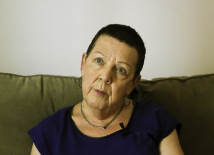

Perspectives on treatment pathways
Perspectives on treatment pathwaysPatricia

Age: 76 years old
Time since first diagnosis: 11 years
Her background:
Patricia (76 years old) has worked as a coordinator in a hospital psychiatry department and is now an active volunteer in her community. She has remained single her whole life and has no children.
Patricia was diagnosed in 2004 and the day before this interview she had her final check up with the oncologist. Patricia’s lump was found thanks to a screening mammography she had after her physician urged her to go. She strongly disliked having the mammography done. Following the testing, Patricia had a partial mastectomy, and then radiation and hormone therapy which she completed about five years ago. After her treatments, Patricia underwent surgery for breast reconstruction with the hope of improving her fit with bras. Unfortunately, surgery didn’t resolve these issues as she had a hematoma after surgery. Her oncologist advised her to not continue surgery as he was afraid that future screening would become more complicated. Patricia lived through depressive feelings and wept frequently after almost five years on hormone therapy. After a search on the internet, she discovered that this was a typical side-effect of the hormones that she took at that time. She was prescribed medication for depression and still takes this but at a much lower dose. Having been a cancer survivor for about 10 years, she still lives with the fear of recurrence although she tries nonetheless to keep her live as normal as possible and to remain active and vital. For example, Patricia is an active member of cancer care committees in her province, she participated in a research to study the effect of exercise, and she provides support to other cancer patients. She finds that the cancer care in her province is much better now than 10 years ago when she received her treatments and she is happy to contribute to that.